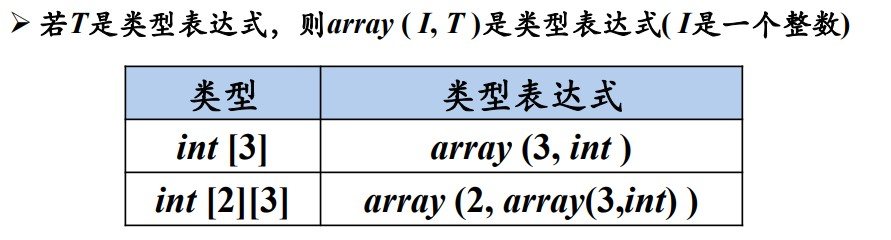
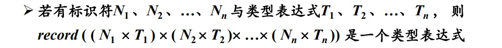

"书接上文"
概述
本章将介绍各类语句的翻译
- 声明语句
- 赋值语句
- 控制语句
- 过程调用语句
声明语句的翻译
收集标识符的类型信息, 为每个标识符分配一个相对地址
类型表达式
- 基本类型是类型表达式
- 可以为类型表达式命名, 类型名是类型表达式
- 将类构造符 (type constructor) 作用于类型表达式可以构成新的类型表达式
- 数组构造符
array:  - 指针表达式
pointer:pointer(T)是类型表达式, 表示指向类型T的指针类型 - 笛卡尔乘积构造符\(\times\): 两个类型表达式通过\(\times\)符号运算后仍然是类型表达式
- 函数构造符\(\rightarrow\): 函数参数的类型表达式的笛卡尔乘积\(\rightarrow\)函数返回值的类型表达式
- 记录构造符
record: 
- 数组构造符
局部变量的存储分配
从类型表达式中可以知道 该类型在运行时刻所需要的存储单元数量 (类型的宽度 width) 在 编译时, 可以使用类型的宽度为每一个名字分配一个 相对地址 名字的类型和相对地址保存在相应的 符号表中
变量声明语句的 SDT:
例子: 非数组局部变量声明
考虑有输入: real x; int i;
例子: 数组局部变量声明
考虑有输入: int[2][3]
简单赋值语句的翻译
主要任务为 生成对表达式求值的三地址码, 赋值语句的基本文法为:
对该文法定义语义规则生成对应的 SDT 如下:
由于这样的操作, 父结点需要赋值子结点的三地址码,
而子结点需要赋值其子结点的三地址码, 会造成消耗空间大的问题, 因此使用
增量翻译, 即修改gen()函数,
使得其在生成三地址码后将新的三地址添加到当前三地址码的最后.
赋值语句的 LR 分析状态机如下:
例子 翻译 x=(a+b)*c
初始时刻
栈状态为
| 0 | |
|---|---|
| $ |
读头指向x: id 入栈,
对应综合属性lexeme=x; 0 状态遇到 id 转移至 2
状态
栈状态为
| 0 | 2 | |
|---|---|---|
| $ | id | |
x |
读头指向=: =入栈; 2
状态遇到=转移至 3 状态
栈状态为
| 0 | 2 | 3 | |
|---|---|---|---|
| $ | id | = |
|
x |
读头指向(: (入栈; 3
状态遇到(转移至 6 状态
栈状态为
| 0 | 2 | 3 | 6 | |
|---|---|---|---|---|
| $ | id | = |
( |
|
x |
读头指向a: id 入栈,
对应综合属性lexeme=a; 6 状态遇到 id 转移至 7
状态
栈状态为
| 0 | 2 | 3 | 6 | 7 | |
|---|---|---|---|---|---|
| $ | id | = |
( |
id | |
x |
a |
读头指向+: 由于 7 状态为归约状态,
且当前读头下为+, 在 产生式 的 FOLLOW 集合中,
因此可以用产生式 6 进行归约, id 和 7 状态出栈; E 入栈, 执行语义动作, 将
id 的lexeme赋值给E.addr; 6 状态遇到 E 转移至
12 状态; +入栈, 12 状态遇到+转移至 9
状态
栈状态为
| 0 | 2 | 3 | 6 | 12 | 9 | |
|---|---|---|---|---|---|---|
| $ | id | = |
( |
E | + |
|
x |
a |
读头指向b: id 入栈,
对应综合属性lexeme=b; 9 状态遇到id转移至 7
状态
栈状态为
| 0 | 2 | 3 | 6 | 12 | 9 | 7 | |
|---|---|---|---|---|---|---|---|
| $ | id | = |
( |
E | + |
id | |
x |
a |
b |
读头指向): 由于 7 状态为归约状态,
且当前读头下为), 在 产生式 的 FOLLOW 集合中,
因此可以用产生式 6 进行归约, id 和 7 状态出栈; E 入栈, 执行语义动作, 将
id 的lexeme赋值给E.addr; 9 状态遇到 E 转移至
13 状态; 13 状态为归约状态, 且当前读头下为), 在产生式的
FOLLOW 集合中, 因此可以用产生式 2 进行归约, E,+,E
和对应的状态出栈; E 入栈, 执行语义动作,
将E.addr设置为中间变量t1,
并且打印三地址码t1=a+b; 6 状态遇到 E 转移至 12 状态;
)入栈, 12 状态遇到)转移至 15 状态
栈 1 状态为
| 0 | 2 | 3 | 6 | 12 | 9 | 13 | |
|---|---|---|---|---|---|---|---|
| $ | id | = |
( |
E | + |
E | |
x |
a |
b |
栈 2 状态为
| 0 | 2 | 3 | 6 | 12 | 15 | |
|---|---|---|---|---|---|---|
| $ | id | = |
( |
E | ) |
|
x |
t1 |
生成代码: t1=a+b
读头指向*: 由于 15 状态为归约状态,
且当前读头下为*, 在产生式的 FOLLOW 集合中, 可以用产生式 5
进行归约, (,E,)和对应的状态出栈, 执行语义动作,
将t1赋值给E.addr; E 入栈, 3 状态遇到 E 转移至
4 状态; *入栈, 4 状态遇到*转移至 10
状态
栈 1 状态为
| 0 | 2 | 3 | |||
|---|---|---|---|---|---|
| $ | id | = |
|||
x |
t1 |
栈 2 状态为
| 0 | 2 | 3 | 4 | 10 | |
|---|---|---|---|---|---|
| $ | id | = |
E | * |
|
x |
t1 |
后续栈操作类似
数组引用的翻译
数组引用翻译的关键是 确定数组元素的存放地址 (数组元素的寻址) 考虑如下的文法:
数组元素寻址 主要是计算偏移地址, 计算方式如下:
例子
为数组元素设计三个 综合属性
L.type: L 生成的数组元素类型, 可以逐层传递, 计算偏移地址L.offset: 计算数组引用的偏移地址, 用于累加\(i_j\times w_j\)L.array: 数组名在符号表的入口
如下为数组翻译的SDT
控制流语句的SDT
设计控制流语句的SDT的关键在于弄清楚各个条件的出口以及对应的代码块
控制流语句的基本文法为 (举例)
在这里需要引入语句的标号: 一个三地址指令对应一个唯一的标号, 用于控制语句寻找入口和出口
为文法符号添加 继承属性 (注意继承属性计算的位置是在其文法符号出现之前)
S.next: S代码之后的指令标号B.true: B为真时转向的指令标号B.false: B为假时转向的指令标号
之所以要设计newlabel()函数是因为需要在文法符号出现前计算其继承属性,
但此时的对应标号仍然未知, 因此需要一个"占位符";
而设计label()函数的目的是在合适的位置及时为继承属性赋值.
注意: 有些时候的跳转指令包含在布尔表达式中, 在下一节提及
条件语句
\[ S \rightarrow if\ B\ then\ S_1\ else\ S_2 \]
其代码结构为:
当B为true的时候进入S1代码块;
当B为false的时候进入S2代码块;
当分支语句对应的代码执行完以后, 其后续待执行代码与S一致
(出口一致), 其SDT如下:
注意在S1分析结束后生成三地址码goto,
表示转向某个标号
\[ S \rightarrow if\ B\ then S_1 \]
其代码结构为:
SDT为:
这里的三地址码生成隐藏在布尔表达式中.
循环语句
\[ S \rightarrow while\ B\ do\ S \]
代码结构如下
B为false的时候与S出口一致, 即结束循环;
B为true的时候需要执行循环体内部代码; 当循环体内部代码结束后
需要重新回到while语句判断布尔条件是否仍然成立,
因此需要建立一个保存while语句所在标号的属性, 便于跳转,
也因此在S1执行后需要生成三地址码goto
其SDT为:
布尔表达式的SDT
布尔表达式翻译时最重要的是 确定布尔表达式的目标跳转地址, 这一节和下一节分别介绍一种方法, 这一节的方法主要是使用 继承属性, 下一节的方法主要使用 综合属性
布尔表达式的文法如下:
其中 不包含 &&, ||, !,
因为这些运算符会被翻译为 跳转指令
其SDT为:
||的代码结构为:
只要B1和B2中有一个为true则B为true

&&的代码结构为:
只要有一个为false, 则B为false

综合例子
任何SDT都可以先建立一个语法分析树, 然后按照从左到右深度优先的顺序执行语义动作
布尔表达式的回填 (backpatching)
控制流语句的翻译关键: 跳转语句的目标标号, 但生成跳转指令时, 目标标号不能确定
上一节处理布尔表达式的方法中, 将存放标号的地址作为 继承属性 传递至目标标号生成的位置, 但代码生成后需要再次遍历三地址码, 绑定属性与具体的标号值, 这样做比较麻烦.
这一节介绍 回填 (backpatching): 生成跳转指令时暂时不指定其目标标号, 而是将其放入队列中, 同一个队列中的所有跳转指令具有相同的目标标号, 待目标标号最终确定时, 再填充.
这里的关键点在于, 使用队列统一管理后, 属性是 综合属性
B.truelist: 该列表中的所有目标标号出口就是B为真时的出口B.falselist: 该列表中所有目标标号出口就是B为假时的出口
需要用到的一些函数:
修改后的SDT如下:
最后等所有的出口确定后进行回填
控制流语句的回填
添加综合属性:
S.nextlist: 该列表中的所有目标标号出口是紧跟在S代码之后的指令的标号.
SDT修改如下:
Switch语句的翻译
可以将每一个case中的判断代码放入一个代码块中
二者的不同点还包括, label 的数量不同, 前者是\(L_{n-1}\)个, 后者是\(L_n\)个
过程调用语句的翻译
过程调用的文法为:
参数列表可以 统一使用队列存储
其SDD如下:
- Post title: 【编译原理】中间代码生成
- Create time: 2023-01-29 22:13:58
- Post link: 2023/01/29/CS/Compiler-MeddleCodeGeneration-zh/
- Copyright notice: All articles in this blog are licensed under BY-NC-SA unless stating additionally.